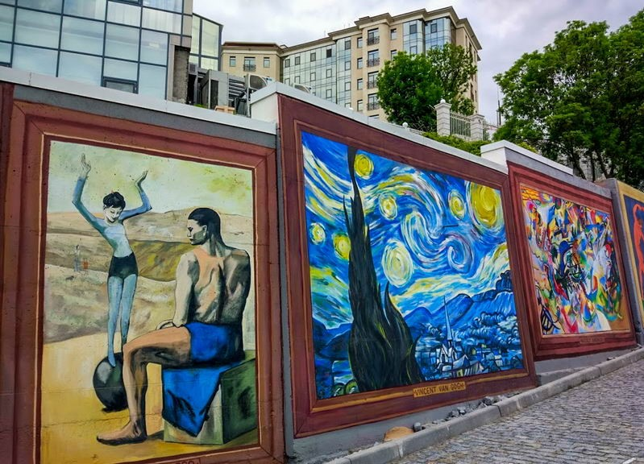

Health track
Health track - starts from the city center, in Schevchenko park, goes above the Sea Port, and extends further on 15 kilometers along the shoreline. It's a popular spot for runners and cyclists looking to train outdoors, as well as for families looking for a leisurely stroll on a Saturday afternoon.
You will inevitably walk it through if you want to get to the beach or beach club.
Here you get the basic human dopamine we all need from time to time. To get away from our screens, life challenges and just enjoy the world the way it is.
Street art gallery

The Health Track has 3 entry points, and one of them, accessed from the French Boulevard, takes visitors along the gallery of iconic masterpieces. The artworks are displayed as street art on the concrete walls that support the hill.
From the masterpieces, you'll easily recognize Dali's The Persistence of Memory, Van Gogh's The Starry Night, and even the famous Mona Lisa is here.
Sea Shore
As we continue our walk along the Health Track, the sound of the waves and the salty sea air become increasingly prominent. The track eventually leads us to the beach, where the Black Sea stretches out before us in all its glory.
The water is a deep, dark blue, and the sun reflects off its surface creating a mesmerizing sparkle. The beach is wide and sandy, with plenty of space for swimming, sunbathing, and playing volleyball. Perfect spot to relax and soak up the sun.
The beach is a place where time seems to stand still, the stress of everyday life melts away and all that matters is the present moment.

Victory Park day
Now, let's move to the Victory Park, located a few blocks away from Arkadia, 20 minutes away from the Health Track.
This is a gorgeous dendra-park with a large pond in the middle that bursts with fountains during the summer. Visitors can take a walk around the pond, admire the fountains, or sit on a bench and enjoy the peaceful atmosphere. Families can also enjoy playgrounds and picnic areas.
Victory Park night
At night, Victory Park transforms into a beautiful destination. The pond is illuminated with LED lights which during winter are reflected by the ice enrichng the ice kingdom scenery
It's a perfect place for romantic walks, or to spend time with friends and family. It's a great place to unwind and enjoy the beauty of the Nature.